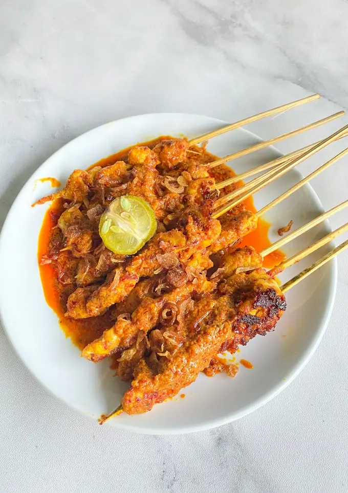

If you travel to Lombok, don't hesitate to try various kinds of culinary delights there, one of
which is bulayak satay. This satay is made from chicken with special spices. But if you've never
tried it, try making it yourself at home! This is a recipe you can try.
- 250gr chicken breast fillet (diced)
- 1 small sachet of thick coconut milk
- 5 cloves of red onion
- 3 cloves of garlic
- 3 dried red chilies
- 10 red cayenne peppers
- 3 bunch chilies
- 1 tsp Lombok shrimp paste (grilled first)
- 3 candlenuts
- 1 Monte orange
- Enough salt, sugar, stock powder, and pepper powder
- Fried onions for sprinkling
- Cooking oil
- Wash the chicken meat thoroughly then cut into cubes
-
Puree the onions, dried red chilies, red cayenne peppers, bunch chilies, candlenuts and chili
paste until smooth
-
Heat some oil. Saute ground spices until fragrant. Add thick coconut milk and add a little
water, salt, sugar, pepper and stock powder. Stir until smooth. Cook until the spices thicken
- Skewer the chicken with satay sticks. Coat with spices. Leave it for about 30 minutes
-
Preheat the grill. Add a little oil, grill the satay until cooked. Remove then coat with monte
orange. Serve with the remaining sauteed spices then sprinkle with fried onions. It's really
delicious